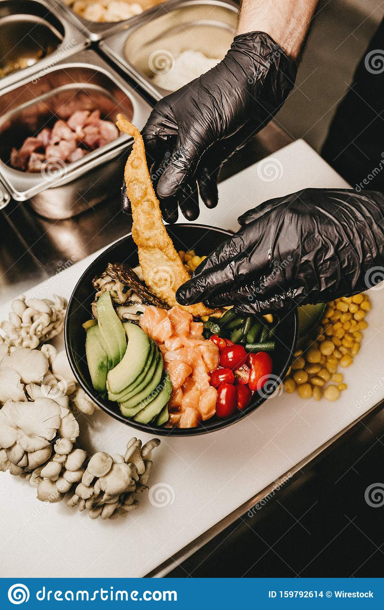

Rogue Pickings started from a dream of building a life of freedom and the love of real food. We knew we didn't ever
want to stay in one place because we are nomads and can't stay too long in one place. The road is our home and the people we
meet along the way are our family.
Wherever we go, we make sure to source the best and freshest ingredients and create a menu with what the place has to offer. Our values
around fresh food and liberty have given us the flexibility to create incredible and innovative dishes that will surprise you every time.
Even more about Rogue Pickings and how they came to be and everything else that they do. The structure of this page is to see if I'm able to pull
this off!